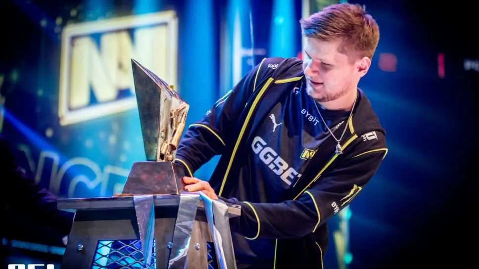

Counter Strike
This is one of my favorite games, Counter Strike. It's a tactical 5v5 first person shooter where you use precise gunplay and utility usage to eliminate the enemy team. It's also super competitive, so if you play bad, your teamates might get really toxic.

Pro Play
The game is probably known best for its professional play. CSGO has one of the largest pro scenes in any video game, with tons of teams from around the world and millions of dollars in prize pools.
The pinnacle of competition in csgo are tournaments known as majors, where all of the best teams in the world battle for timeless trophies
This is a picture of the best player in the world s1mple lifting the PGL Major 2021 trophy. This tournament had the biggest prize pool in CSGO history at $2 million dollars.